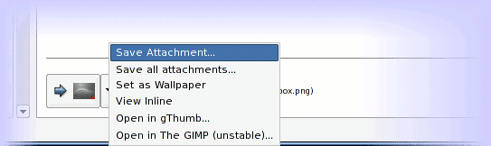
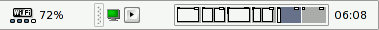
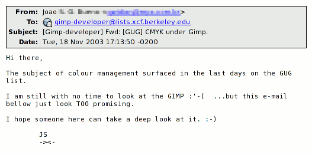
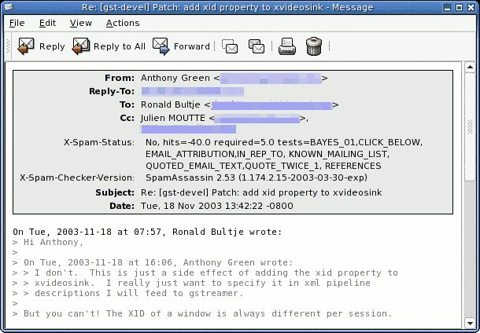
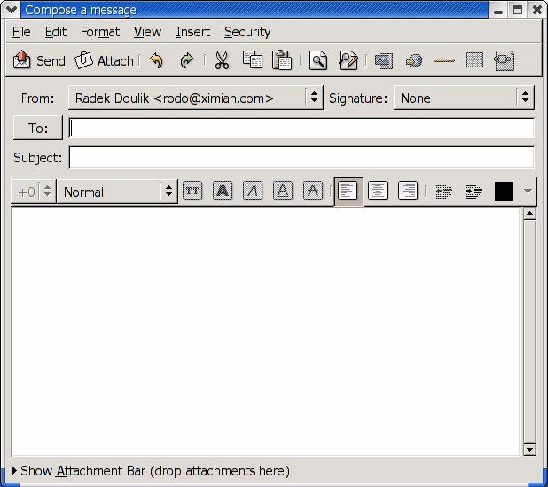
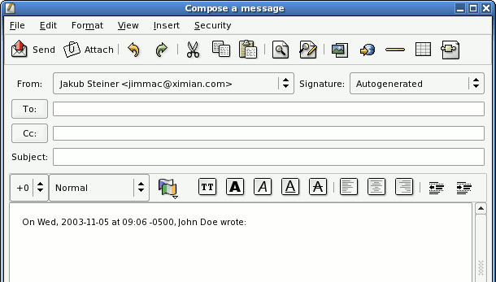
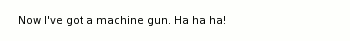
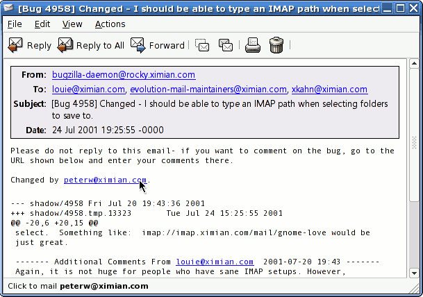

| Task Name | Bounty |
|---|---|
| Solved: Set wallpaper from mailer | $100 |
| Implement a panel notification applet for new mail | $400 |
| Mailing list actions | $500 |
| Solved: Finish NNTP support in Evolution | $750 |
| Inline PGP support for evolution | $250 |
| Solved: Custom mail headers display | $200 |
| Ask user to make Evolution default mail app | $100 |
| Solved: Attachment bar and drag-and-drop in the composer | $500 |
| Templates for new messages and replies | $500 |
| Language selection in composer | $400 |
| Better smiley substitution in the composer | $200 |
| Message receipts | $500 |
| Solved: Link URLs in the status bar | $200 |
It would be handy to be able to set the desktop background picture directly from images displayed in Evolution.

In em-popup.c there is already a hook for this, but unimplemented (see emp_part_popup_set_background). The menu item will automatically be added to any image or image attachment referenced from a context menu. The guts merely needs to be implemented.
You should subscribe to the evolution-hackers mailing list, and discuss any technical issues there. Michael Zucchi <notzed@ximian.com> and Jeffrey Stedfast <fejj@ximian.com> will be the primary contacts on the list.
GNOME Desktop programming and mailing list information is available on developer.gnome.org
An often requested feature has been to have new mail notified via the panel.
There are two parts to this task. The first is to write a panel applet component for the user interface. This should be incorporated into the mail code (as em-panel-applet.c), and it should attempt to insert itself into the panel notification area when the mailer starts up. The applet should be started from mail-component-factory.c and be configurable in the usual manner.

The second part is to hook into new mail events. Currently all new mail events are routed (from multiple threads) through mail-folder-cache.c, so it can trivially be hooked up into the appropriate place in the real_flush_updates function in that file.
This code should also either merge with or replace the current new mail notification code in mail-folder-cache.c and the preferences pages. The original functionality must work if there are no panels running in the current session and the applet is not started.
evolution/mailIt would be nice to only watch specific folders or stores rather than all folders. This could re-use the folder selector widget and configuration mechanism as used for offline mode selection. It would probably be appropriate to support drag and drop of folders from the folder list onto the applet to add/remove them from the list of watched folders.
Another extension would be to use different colors/methods/sounds to indicate the new mail depending on the folder/store or priority of the folder. This is all applet-specific code.
You should subscribe to the evolution-hackers mailing list, and discuss any technical issues there. Michael Zucchi <notzed@ximian.com> and Jeffrey Stedfast <fejj@ximian.com> will be the primary contacts on the list.
Many mailing lists follow RFC 2369 and provide mailing list information in their email headers. This information can be used by mail clients to present mailing list management functions to users. For example, a mailing list can provide information on unsubscribing from the list.
The RFC gives these actions:
Note that the formats of these fields can vary widely and may contain multiple URLs or actions which provide the same result. Also, there is no reason to expect that a mailing list which includes one or more mailing list headers will include all of them.
Evolution should provide an interface to these actions. If any of these headers are present in a message, Evolution should present them in a "List" submenu off the "Actions" menu. A successful patch to Evolution should follow the usability guidelines mentioned in the RFC.
The only special action is "Post." If a mailing list has a "Post" header of "NO" then posting is not allowed on this list. Replies to this message should only go to the message sender; the "Reply to List" menu item should be disabled. The "Reply to List" menu item should always follow the "Post" header clue. EMFolderView manages these menus.

The mail component, evolution/mail.
For Evolution information, join the Evolution Hackers mailing list.Evolution has some initial NNTP (NEWS, or NNRP) support, but it is incomplete. This task is to fill out the NNTP implementation and provide a suitable user-interface for managing NNTP sessions.
This would help us get more adoption of Evolution inside the OpenOffice team, since they use news for all their internal discussions.
The first aim should be to complete the CamelStore and CamelFolder implementation of the NNTP provider.
For CamelNNTPStore, the folder list should be stored in a CamelStoreSummary, which will require writing a CamelNNTPStoreSummary in the same vein as CamelImapStoresummary. It should support two modes, one for a flat '.' separated list of folders, and another implementing a hierarchy of folders canonicalized into '/' separated paths. Once complete, offline operation, and the subscription interface can be implemented. get_folder_info must also be finished, currently it doesn't honor the path or mode arguments.
CamelNNTPFolder needs to have the append() method implemented, which will be used to POST messages to the NNTP store.
The composer already has support for posting to folders, but it may need additional support for NNTP addressing and cross-posting to NNTP folders and email addresses.
CamelNNTPStoreSummary could also interact and cache standard NNTP folder information into ~/.newsrc, to work with legacy news readers.
The NNTP protocol is described in RFC 977. An additional information RFC, RFC 2980 provides an overview of commonly implemented NNTP extensions.
You should subscribe to the evolution-hackers mailing list, and discuss any technical issues there. Michael Zucchi <notzed@ximian.com> and Jeffrey Stedfast <fejj@ximian.com> will be the primary contacts on the list.
An often requested feature for Evolution is to support inline-pgp ('clearsigned') secure emails, in addition to the PGP-MIME format we already support. This will aid interoperability with legacy secure-mail implementations.
See bugs Ximian Bug #17540, and Ximian Bug #17541.
mail/em-inline-filter.c already has code (some commented out) to identify and separate inline pgp messages into separate CamelMimePart objects. This needs to be activated, and the content type (in emif_types[] needs to be changed to something unique ("application/x-inline-pgp" perhaps?).
mail/em-format-html-display.c then needs to be modified to handle that mime-type (see type_builtin_table). It should use similar code to efhd_application_xpkcs7mime or efhd_multipart_signed, and should share common code where appropriate. Some of this code is currently undergoing changes, so discuss this on the lists first.
Finally, you need to support this (pseudo) mime-type in camel/camel-gpg-context.c:gpg_verify. It already has code to test the mime type of the incoming part, this just needs to be extended to execute a different code path for the inline-pgp type. It may also need additional support in the gpg_ctx engine (in the same file).
Allow the sending of ASCII armored PGP (aka inline pgp) messages too. This requires adding the support for inline signing to camel-gpg-context.c, and passing the option to it from the security configuration page via the composer signing code in composer/e-msg-composer.c:build_message. See the way camel-smime-context.c implements it's sign_mode option for how this should be done.
You should subscribe to the evolution-hackers mailing list, and discuss any technical issues there. Michael Zucchi <notzed@ximian.com> and Jeffrey Stedfast <fejj@ximian.com> will be the primary contacts on the list.
RFC 2298 contains details of the OpenPGP message format, although much of the detail beyond ASCII armoring (section 6.2) is not relevant.
As in Ximian Bug #1186, it would be nice to configure the header display to show different default headers, merely as a convenience to users.

Various files in evolution/mail.
EMFormat already has api for setting which headers are displayed by default, so most of the backend work is already done. What is required is a GUI for configuring the options, and glue to store the options.
The configuration GUI should be a new tab on the Mailer Settings page. A new tab should be created in the glade file evolution/mail/mail-config.glade, and hooked into evolution/mail/em-mailer-prefs.c, and it should store the options in a gconf key under "/apps/evolution/mail/display", for example "headers". The key should be a simple string array.
evolution/mail/em-folder-view.c is used to listen to configuration changes used by EMFormat, emfv_setting_notify needs to be extended to include the new gconf key to manage the header list.
A FIXME in evolution/mail/em-format.c:emf_format_clone needs to be finished to complete the task so the headers displayed are properly honored for printing and redisplays.
EMFormat (and EMFormatHTML) also defines properties for each header (e.g. BOLD LABEL). These could be added to the configuration page and configuration key, and even extended.
You should subscribe to the evolution-hackers mailing list, and discuss any technical issues there. Michael Zucchi <notzed@ximian.com> and Jeffrey Stedfast <fejj@ximian.com> will be the primary contacts on the list.
It would be nice if Evolution would prompt the user if he or she would like to set Evolution as the default "mailto:" handler for GNOME if:
The only affected module will be evolution/mail
The best place to add this code is probably in evolution/mail/mail-component.c:mail_component_init right after all the initialization happens.
You'll need to pop up a GtkDialog (probably a Yes/No; defaulting to Yes?) with the prompt: "Would you like to make Evolution your default mail application?". The setting should be saved to the gconf key "/desktop/gnome/url-handlers/mailto"
You will probably also want to add a checkbox to the dialog to allow the user to opt-out of ever seeing the dialog again. You will have to create a new gconf key for this preference, probably something like "/apps/evolution/mail/prompts/default_mailer" or some such.
You should subscribe to the evolution-hackers mailing list, and discuss any technical issues there. Michael Zucchi <notzed@ximian.com> and Jeffrey Stedfast <fejj@ximian.com> will be the primary contacts on the list.
Currently, to drag and drop a file into an Evolution message, you must drop it outside the message body. To make it easier to attach files via drag and drop, we would like to make the attachments bar more visible.

First you will need to add an arrow widget with a label saying "Show/Hide Attachments Bar (drop attachments here)". When the arrow is pressed it should show/hide the attachment bar as shown in the animation.
When you drag a file over that arrow or label, the attachment bar should be shown. Note that an A accelerator (M-a) should toggle the attachment bar visibility. The direction of the arrow widget should change depending on the attachment bar visibility.
Once there are files attached, it will be indicated on the right side by an attachment icon and a label saying: "%d File(s) Attached", where %d will be substituted by the number of attached files to that message (as shown in the animation).
This will require work in Evolution's composer (evolution/composer), which is part of the Mailer component. You will need an understanding of Gtk+ and especially of Gtk's drag-and-drop API.
You should subscribe to the evolution-hackers mailing list, and discuss any technical issues there. Michael Zucchi <notzed@ximian.com> and Jeffrey Stedfast <fejj@ximian.com> will be the primary contacts on the list for the Mailer. Larry Ewing <lewing@ximian.com> and Radek Doulik <rodo@ximian.com> might help you with composer knowledge as well.
We would like to allow people to prepare their own message templates. The templates will be stored in a Templates folder and may contain patterns which will be substituted when the template is used.
First you will need to add a new special folder, named Templates to the local mail folders tree (~/.evolution/mail/local). That folder will act similar to the Drafts folder, except that it will not delete the message template when writing of the new message/reply is sent (or saved as a Draft).
The Action submenu in the menubar and the context popup menu in the message list of the Templates folder will contain additional items "Default New Mail" and "Default Reply". When activated, that template will become the default template which will be used when composing a new message or replying to a message, respectively. A "Reset templates" item should reset the templates so that no template, but the original reply and new message code will be used. In the other folders, the menubar items should be grayed out and items should not appear in the popup menu.
Next you have to implement substitution patterns. These will be substituted by common information like "Me" for user's used account mail address, "Sender" for sender of a mail you are replying to, "Date", "Received" and so on. These should be available in the composer's menus. The mailer component should substitute these when formatting a reply or a new message. The composer menu will have a "Save Template" item, which will save the current message to the Templates folder. The patterns should have the case-insensitive format: ${Me}, ${Sender}, ${Date}, ...
This will require work in Evolution's composer (evolution/composer), which is part of the Mailer component. You will also need to know GtkHTML editor control API (gtkhtml).
You should subscribe to the evolution-hackers mailing list, and discuss any technical issues there. Michael Zucchi <notzed@ximian.com> and Jeffrey Stedfast <fejj@ximian.com> will be the primary contacts on the list for the Mailer. Larry Ewing <lewing@ximian.com> and Radek Doulik <rodo@ximian.com> might help you with GtkHTML knowledge.
Add a pop-up menu to the composer toolbar for selecting the language. This would affect the default spell-checking dictionary, the "On DATE, PERSON said:" attribution, the Content-Language header, and various other things. See Ximian Bug #10577 for more details.

Add a pop-up menu to the toolbar. (Maybe using the flag icons from the keyboard layout applet?) Add hooks to update the choice of spell-check language, etc, as appropriate. Turn the strings like the reply attribution and "Forwarded Message", etc, into special objects so that they can be dynamically translated (the same way the signature changes when you select a new one).
The user should be able to configure what languages appear in the pop-up, and which is the default. If you receive a message with a Content-Language header indicating a specific language, then the composer should start with that language selected by default.
The switching should be implemented in a similar fashion to the current signature switching code using gtkhtml private data. And the current setting of the language should be exposed to the composer through a bonobo property on the editor control. The setting should also be saved in the html output in a lang attribute on the body element.
This will require work in gtkhtml particularly the editor component (gtkhtml/components/html_editor) and parts of the Mailer component (evolution/composer) You should subscribe to the evolution-hackers mailing list, and discuss any technical issues there. Larry Ewing <lewing@ximian.com> and Radek Doulik <rodo@ximian.com> will be the primary contacts on the list for GtkHTML. Michael Zucchi <notzed@ximian.com> and Jeffrey Stedfast <fejj@ximian.com> will be the primary contacts on the list for the Mailer.Make automatic smiley substitution easier to work around when enabled

Currently the when smiley substitution is on in the editor there is no easy way to reverse the substitution. Modify the behavior such that if the user hits backspace while the cursor is on a smiley the first time the substitution is undone, but the smiley text remains.
RFC 2298 describes a standard method for clients to request a "Message Disposition Notification" (aka "Read Receipt") from the recipient indicating that they have received the message.
The mailer (evolution/camel, evolution/mail, and evolution/composer).
Supporting this in Evolution would require the following things:
Evolution should make URLs embedded in emails visible to the user. When the user tabs to, or hovers the mouse over a link in an email, Evolution should show the selected URL in the status bar.
The URLs should be displayed in a friendly way to the user. For example, "mailto:foo@bar.com" should display: "Click to send mail to foo@bar.com". Other URLs, like "http://www.foobar.com/", should display the message: "Click to open http://www.foobar.com/".
The URL could be shown in the status bar. However, the message window does not yet have an associated status bar. The message window would need a status bar in order to work correctly.

This bounty requires changes to the mailer and shell.
The GtkHTML widget emits an on_url signal when the user mouses over a URL. Ximian Bug #3383 has some more discussion of this bug (though some of it may be specific to APIs that are changing in 2.0).